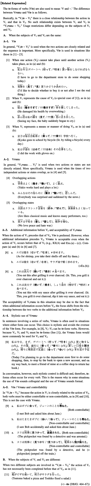

Vmasu (I. 556)
- (ksa).
- ジョンは日本で生まれ、十歳まで日本の学校で勉強した。
- John was born in Japan and studied at a Japanese school until he was ten.
- (ksb).
- 父は銀行に勤め、母はうちの近くでブティックを開いている。
- My father works for a bank and my mother has a boutique near my house.
- (a).
- みんながお金を出し合い、京子の出産祝いを買った。
- Everybody contributed some money and bought a present for Kyoko's new baby.
- (b).
- 海老は殻をむき、サラダ油で軽く炒めます。
- As for shrimp, you take their shells off and fry them lightly in salad oil.
- (c).
- 日本では一週間前から梅雨に入り、毎日鬱陶しい日が続いています。
- In Japan we've been in the rainy season for a week (literally: since a week ago) and had gloomy days every day.
- (d).
- 本校の五十周年を記念し、祝賀パーティーを開きます。
- Commemorating this school's fiftieth anniversary, we are going to have a celebration party.
- (e).
- 長男は医者になり、次男は弁護士になった。
- My first son became a doctor and my second, a lawyer.
- (f).
- 男が荷車の前の綱を引っ張り、女が後ろを押した。
- The man pulled the strap in front of the cart and the woman pushed it from behind.
